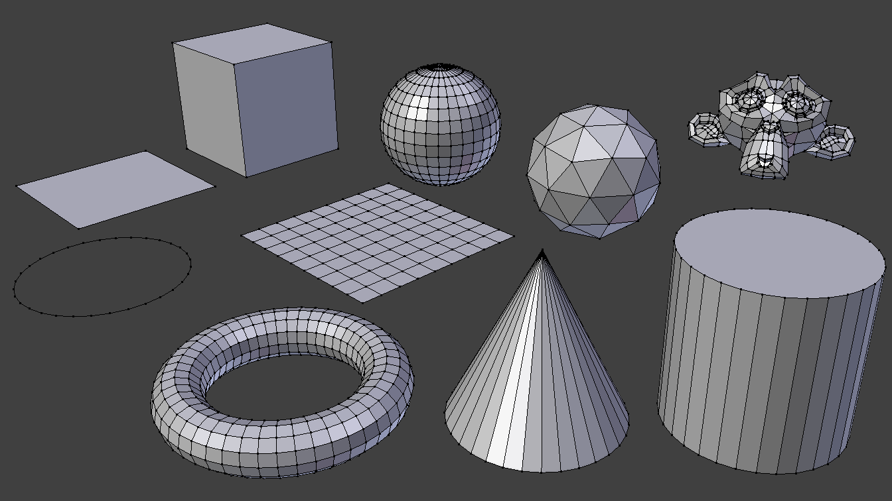

基本体¶
参考
模式: 物体模式和编辑模式
面板:
菜单:
快捷键:
Shift-A网格是3D场景中使用的常见物体类型。Blender配有一些 “基本” 网格形状，用户可以之为起点开始建模。编辑模式下，可以在3D游标位置添加基本体。

Blender标准基本体。
Note
平面基本体的注意事项
可以通过将一个或多个顶点移出其平面（适用于 面，圆 和 栅格）来形成三维网格。实际上，圆甚至常常被用作创建复杂的网格的起点。
Hint
为了加速建模，最好的方法是想象哪个类型的基本体更适合你的模型。如果制作长方体，最好的方法是从基础立方体开始，等等。
通用选项¶
这些通用选项位于 工具栏 中的操作面板，当创建物体时显示。超过一个基本体的用到的选项有：
- 生成UV
- 生成新几何体的默认UV展开。生成的UV位于第一个UV层(需要时添加)。（可用于平面，立方体，圆形，经纬/棱角球，柱体和锥体）。
- 半径/尺寸，对齐到平面，位移，旋转
- 请参见 通用物体选项。
平面¶
标准平面是单个四边面，由四个顶点，四个边和一个面组成。就像躺在桌子上的一张纸；它不是三维物体，因为它是平的，没有厚度。可以用平面创建的对象包括地板，桌面或镜子。
立方体¶
标准立方体包含八个顶点，十二条边和六个面，并且是三维对象。可以通过立方体创建的对象包括骰子，盒子或板条箱。
圆环¶
- 顶点
- 定义圆或多边形的顶点数。
- 填充类型
设置圆环的填充方式。
- 三角扇片
- 填充共用顶点的三角面。
- 多边形(N-gon)
- 使用 多边面(N-gon) 填充。
- 无
- 无填充。仅创建顶点构成的圆环。
经纬球¶
标准的经纬球体由四边面、顶部和底部的三角扇面组成。它可以用于纹理。
- 段数
- 垂直段数。像地球的经线一样，连接两极。
- 环
水平段数。这些就像地球的纬线。
Note
环指的是面循环，而不是循环边，循环边会少一圈。
棱角球¶
棱角球是由三角面组成的多边形球体。棱角球通常用于实现比经纬球更多的各向同性顶点布局。
- 细分
- 细分级数。级数为1时，棱角球是一个二十面体，20个等边三角面组成的实体。细分级数每增加1级，三角面被细分为4个三角面1次。
Note
即使细分级数不高，细分后的棱角球的顶点数也可能变得很高(10次细分创建5,242,880个三角形面)。添加如此密集的网格可能导致程序崩溃。
柱体¶
可以由圆柱体创建的物体包括手柄和杆。
- 顶点
- 用于定义圆柱体或棱柱体的面与面之间的纵向边数。
- 深度
- 设置圆柱体的初始高度。
- 封盖类型
- 与上文的圆环类似。当设置为无时，创建的物体将是一个管子。可以用管子创建的物体包括管道或饮料杯（柱体和管之间的基本区别在于前者具有封闭端）。
锥体¶
可以由锥体创建的物体包括鞋钉或尖头帽。
- 顶点
- 圆环或尖端之间的纵向边数，用于定义锥体或金字塔。
- 半径1
- 设置锥体圆形底面的半径。
- 半径2
- 设定圆锥尖端的半径，用于创建圆台锥体。值为0用于生成标准锥形。
- 深度
- 设置圆锥的初始高度。
- 底盖类型
- 与上文的圆环类似。